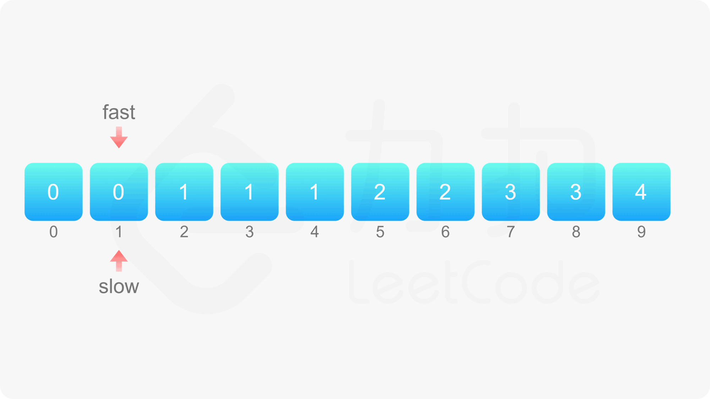

GitHub：https://github.com/scarlett9354/js-leetcode
26. 删除排序数组中的重复项 给你一个有序数组 nums ，请你 原地 删除重复出现的元素，使每个元素 只出现一次 ，返回删除后数组的新长度。
不要使用额外的数组空间，你必须在 原地 修改输入数组 并在使用 O(1) 额外空间的条件下完成。
解释：函数应该返回新的去重后的长度 len ，并且原数组 nums 的前len个元素被修改为 [x, x, …] 。不需要考虑数组中超出新长度后面的元素。
思路
由于给定的数组 nums 是有序 的，因此对于任意 i<j，如果 nums[i]=nums[j]，则对任意 i≤k≤j，必有 nums[i]=nums[k]=nums[j]，即相等的元素在数组中的下标一定是连续的 。利用数组有序的特点，可以通过双指针 的方法删除重复元素。

1 2 3 4 5 6 7 8 9 10 11 12 13 14 15 16 17 18 19 20 21 22 23 24 25 26 27 28 29 30 31 32 33 34 35 36 37 38 function removeDuplicates (nums ) const n = nums.length if (n === 0 ) return 0 let fast = 1 , slow = 1 while (fast < n) { if (nums[fast] !== nums[fast - 1 ]) { nums[slow] = nums[fast] ++slow } ++fast } return slow } const nums1 = [1 , 1 , 2 ]console .log(removeDuplicates(nums1)) console .log(nums1) const nums2 = [0 , 0 , 1 , 1 , 1 , 2 , 2 , 3 , 3 , 4 ]const len = removeDuplicates(nums2)console .log(len) console .log(nums2) console .log(filterTargetsByLength(nums2, len)) function filterTargetsByLength (arr, len ) return arr.filter((item, index ) => index < len) }
复杂度分析
时间复杂度：O(n)，其中 n 是数组的长度。快指针和慢指针最多各移动 n 次。 空间复杂度：O(1)。只需要使用常数的额外空间。 27. 移除元素 给你一个数组 nums 和一个值 val，你需要 原地 移除所有数值等于 val 的元素，并返回移除后数组的新长度。
不要使用额外的数组空间，你必须仅使用 O(1) 额外空间并 原地 修改输入数组。
元素的顺序可以改变。你不需要考虑数组中超出新长度后面的元素。
思路
如果要移除的元素恰好在数组的开头，例如序列[1,2,3,4,5]，当 \textit{val}val 为 11 时，我们需要把每一个元素都左移一位。
注意到题目中说：「元素的顺序可以改变」。实际上我们可以直接将最后一个元素 5 移动到序列开头，取代元素 1，得到序列 [5,2,3,4]，同样满足题目要求。这个方法在序列中 val 元素的数量较少时非常有效。
实现方面，我们依然使用双指针，两个指针初始时分别位于数组的首尾，向中间移动遍历该序列。
1 2 3 4 5 6 7 8 9 10 11 12 13 14 15 16 17 18 19 20 21 22 23 24 25 26 27 28 function removeElement (nums, val ) let left = 0 , right = nums.length while (left < right) { if (nums[left] === val) { nums[left] = nums[right - 1 ] nums.splice(right - 1 , 1 ) right-- } else { left++ } } return left } const nums1 = [3 ,2 ,2 ,3 ], val1 = 3 console .log(removeElement(nums1, val1), nums1) const nums2 = [0 , 1 , 2 , 2 , 3 , 0 , 4 , 2 ], val2 = 2 console .log(removeElement(nums2, val2), nums2)
这个方法两个指针在最坏的情况下合起来只遍历了数组一次，避免了需要保留的元素的重复赋值操作。
复杂度分析
35. 搜索插入位置 给定一个排序数组和一个目标值，在数组中找到目标值，并返回其索引。如果目标值不存在于数组中，返回它将会被按顺序插入的位置。
请必须使用时间复杂度为 O(log n) 的算法。
思路：二分查找
如果一个问题中，待查找的数是整数，且知道范围，大概就可以使用二分查找算法。
从题干中我们可以得出最后的目标：在一个有序数组中找第一个大于等于 target 的下标。
1 2 3 4 5 6 7 8 9 10 11 12 13 14 15 16 17 18 19 20 21 22 23 24 25 26 27 28 29 30 31 32 33 34 35 36 37 38 function searchInsert (nums, target ) const n = nums.length let left = 0 , right = n - 1 while (left <= right) { let mid = ((right - left) >> 1 ) + left if (target === nums[mid]) { return mid } else if (target < nums[mid]) { right = mid - 1 } else { left = mid + 1 } } return left } const nums1 = [1 , 3 , 5 , 6 ], target1 = 5 console .log(searchInsert(nums1, target1)) const target2 = 2 console .log(searchInsert(nums1, target2)) const target3 = 7 console .log(searchInsert(nums1, target3)) const target4 = 0 console .log(searchInsert(nums1, target4)) const nums2 = [1 ]console .log(searchInsert(nums2, target4))
复杂度分析
时间复杂度：O(log n)，其中 n 为数组的长度。二分查找所需的时间复杂度为 O(log n)。
空间复杂度：O(1)。我们只需要常数空间存放若干变量。